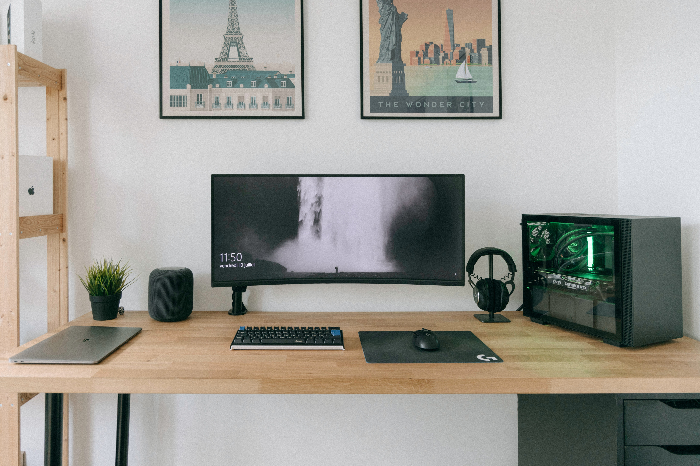

الكمبيوتر أو اللابتوب
الكمبيوتر
كمبيوتر سطح المكتب هو كمبيوتر ثابت وثابت سيبقى على مكتب في مكتب أو غرفة نوم. يتكون عادةً من أجزاء مختلفة: برج وشاشة ولوحة مفاتيح وماوس. تعد أجهزة الكمبيوتر بشكل عام أكثر قابلية للتخصيص من أجهزة الكمبيوتر المحمولة أيضًا. يمكنك تجميع أفضل الأجزاء معًا لكل جانب من جوانب الكمبيوتر عندما تختار كمبيوتر سطح المكتب ، في حين أن اختياراتك تكون محدودة أكثر مع جهاز كمبيوتر محمول. تحقق من اختيارنا لأفضل أجهزة كمبيوتر سطح المكتب لترى ما يقدمه عامل الشكل هذا. الكمبيوتر المحمول (يسمى أيضًا الكمبيوتر المحمول) هو جهاز محمول متعدد الإمكانات يحتوي عادةً على مدخلات USB على الجانبين للأجهزة الطرفية الاختيارية. تحتوي أجهزة الكمبيوتر المحمولة على شاشة مدمجة ولوحة مفاتيح مدمجة ولوحة تتبع تعمل بمثابة ماوس ويمكن أن تختلف في الحجم. أجهزة الكمبيوتر المحمولة محدودة بشكل عام بحجمها ولكن العديد من البطاريات الحديثة كبيرة بما يكفي لتوفير 12 ساعة أو أكثر من الطاقة قبل الحاجة إلى إعادة الشحن. لقد جمعنا معًا أفضل أجهزة الكمبيوتر المحمولة أيضًا.
اللابتوب

يعد الكمبيوتر المحمول هو الخيار الأفضل للطلاب الذين يذهبون إلى المدرسة خارج المنزل كل يوم ويحتاجون إلى جهاز كمبيوتر للفصول الدراسية. في حين أن أجهزة الكمبيوتر المحمولة أكثر حساسية من أجهزة الكمبيوتر المكتبية ، يمكنك الآن العثور على أجهزة كمبيوتر محمولة متينة ستتعرض للسقوط أو اثنين دون أن تتعرض للتلف. أفضل استخدام لأجهزة الكمبيوتر المحمولة هو العمل الخفيف: القراءة أو معالجة الكلمات أو بث مقاطع الفيديو أو استخدام الوسائط الاجتماعية. إذا كنت ترغب أنت أو طفلك في التمتع بحرية التجول أثناء استخدام الكمبيوتر ، فيجب أن يستمر الكمبيوتر المحمول المشحون بالكامل ليوم كامل للعمل أو التعلم. لقد قمنا بتجميع قائمة بأفضل أجهزة الكمبيوتر المحمولة للطلاب وأفضل أجهزة الكمبيوتر المحمولة للأطفال.


.jpg)
.jpg)
.jpg)